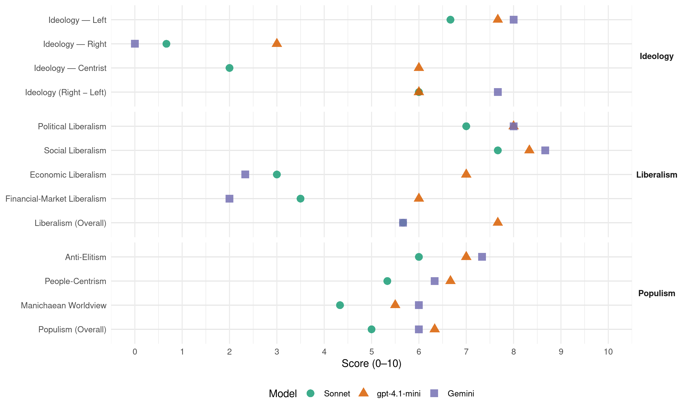

GA (Austria, 1990)
manifesto_id 42110_199010
Get full text: This site shows derived annotations and short verbatim quotes only. The full manifesto text is © Manifesto Project / WZB — obtain it via manifesto-project.wzb.eu using the manifesto_id above.
Headline scores
| Dimension | Sonnet | gpt-4.1-mini | Gemini |
|---|---|---|---|
| Populism (Overall) | 5.0 | 6.3 | 6.0 |
| Anti-Elitism | 6.0 | 7.0 | 7.3 |
| People-Centrism | 5.3 | 6.7 | 6.3 |
| Manichaean Worldview | 4.3 | 5.5 | 6.0 |
| Ideology (Right − Left) | 6.0 | 6.0 | 7.7 |
| Liberalism (Overall) | 5.7 | 7.7 | 5.7 |
| Political Liberalism | 7.0 | 8.0 | 8.0 |
| Social Liberalism | 7.7 | 8.3 | 8.7 |
| Economic Liberalism | 3.0 | 7.0 | 2.3 |
| Financial-Market Liberalism | 3.5 | 6.0 | 2.0 |
Evidence per dimension
Economic Liberalism
Gemini · score 3.0 · verified · chunk 1
“alle Gütermärkte von der Preisbindung zu befreien”
Grundsätzlich sind alle Gütermärkte von der Preisbindung zu befreien, miteinereinzigenAusnahme: dem Milchmarkt.
Gemini · score 2.0 · verified · chunk 2
“Zur Eindämmung der Bodenspekulation ist der Gewinn”
Baulandreserven sind rückzuwidmen. Die Verfügbarheit des Baulandes ist durch eine progressive Baulandabgabe sicherzustellen. l Zur Eindämmung der Bodenspekulation ist der Gewinn aus Widmungsänderungen
Gemini · score 2.0 · verified · chunk 3
“Preisbeschränkungen für alle Mietwohnungen auch für solche”
Wohnung als Ware wendet Ihre Forderungen lauten Q keine weitere Aufweichung der Mietzinsobergrenzen Q Preisbeschränkungen für alle Mietwohnungen auch für solche, die bisher aufgrund
gpt-4.1-mini · score 7.0 · verified · chunk 1
“Die Zerstörung der Umwelt ist die logische Folge einer Ökonomie, die gemeinsam mit ihren Vasallinnen Wissenschaft und Politik alles zum quantifizierbaren verwertbaren, profitablen Material erklart”
Die Zerstörung der Umwelt ist die logische Folge einer Ökonomie, die gemeinsam mit ihren Vasallinnen Wissenschaft und Politik alles zum quantifizierbaren verwertbaren, profitablen Material erklart Die Dinge haben keine andere Realität mehr als diese
gpt-4.1-mini · score 8.0 · verified · chunk 2
“freie Märkte, Wettbewerb, Deregulierung”
Die Forderung nach der faktischen Gleichstellung der Frau in allen Lebensbereichen und nach einer gerechten Einkommensverteilung ist zentrales Postulat im Kampf um mehr Demokratie Das heißt vor allem den gleichen Zugang zu Bildung, Information und Öffentlichkeit. Die Forderung nach der faktischen Gleichstellung der Frau in allen Lebensbereichen und nach einer gerechten Einkommensverteilung ist zentrales Postulat im Kampf um mehr Demokratie
gpt-4.1-mini · score 6.0 · verified · chunk 3
“Die”unendliche” quantitative Wachstumsspirale als Grundbedingung des herrschenden Wirtschaftssystems ist nicht mehr vonnöten”
die eine Integration der Wirtschafts-, Sozial- und Umweltpolitik zum Ziele hat Der vorhandene Reichtum unserer Gesellschaft hat bereits ein Ausmaß erlangt, das die Befriedigung menschlicher Bedürfnisse zu leisten imstande wäre Die “unendliche” quantitative Wachstumsspirale als Grundbedingung des herrschenden Wirtschaftssystems ist nicht mehr vonnöten Außerdem sei an dieser Stelle daran erinnert, daß ein großer Teil des Reichtums der Ersten Welt auf der Ausbeutung der Dritten und Vierten beruht Das Ende dieser Ausbeutung wurde auch die gesamte Sozialpolitik der Ersten Welt in Frage stellen Daruberhinaus müssen die sozialen,
Sonnet · score 4.0 · mixed · chunk 1
“Grundsätzlich sind alle Gütermärkte von der Preisbindung zu befreien”
Liberalisierung. Märkte: Grundsätzlich sind alle Gütermärkte von der Preisbindung zu befreien, mit einer einzigen Ausnahme: dem Milchmarkt. Es werden keine Exportstützungen zur Überschußabfuhr mehr gewährt
Sonnet · score 3.0 · verified · chunk 2
“Deregulierungs- und Flexibilisierungsprojekt der (neo)liberalen Theorie”
Das Deregulierungs- und Flexibilisierungsprojekt der (neo)liberalen Theorie und Praxis (vergleiche das EG-Binnenmarktkonzept) wird mit dem Verweis auf Freiheit legitimiert — critically framed
Sonnet · score 3.0 · verified · chunk 3
“Beschränkung der Gewinne aus Bodenspekulation”
Beschränkung der Gewinne aus Bodenspekulation durch ein Verkaufverbot der Grundstücke innerhalb der ersten 5 Jahre, befristete Baulandausweisungen, hohe Besteuerung der Gewinne aus Transaktionen
Financial-Market Liberalism
Gemini · score 2.0 · verified · chunk 3
“Zinsertragssteuer von 10%”
Einfrieren bzw. verlangsamtes Wachsen von Höchstpensionen l Zinsertragssteuer von 10% l Reduzierung des Bundesheeres (80%)
gpt-4.1-mini · score 6.0 · verified · chunk 1
“Die Verbundgesellschaft hat die Energiepolitik der Bundesregierung zu befolgen”
Die Verbundgesellschaft hat die Energiepolitik der Bundesregierung zu befolgen - Prioritäten einzelner Energieträger sind nach regionalen Gesichtspunkten zu setzen und in die Raumordnungsgesetze einzubeziehen
Sonnet · score 4.0 · verified · chunk 2
“90% dieser Summe liegen in den Händen von nur 20%”
Österreicher und Österreicherinnen rund 2 Billionen öS an Sparguthaben, Wertpapieren, Aktien und Lebensversicherungen, aber 90% dieser Summe liegen in den Händen von nur 20% der Bevölkerung
Sonnet · score 3.0 · verified · chunk 3
“Zinsertragssteuer von 10%”
Finanzierung aller anderen Sozialmaßnahmen … Zinsertragssteuer von 10% … Neue Prioritäten im Budget … Wertschöpfungsabgabe
Political Liberalism
Gemini · score 8.0 · verified · chunk 1
“vollständige Demokratisierung aller umweltrelevanten Entscheidungsprozesse”
Grundsätze einer grünen Umweltpolitik sind: Vollständige Demokratisierung Erstens die vollständige Demokratisierung aller umweltrelevanten Entscheidungsprozesse Es war der
Gemini · score 8.0 · verified · chunk 2
“Trennung von Gesetzgebung, Regierung und Gerichtsbarkeit”
Zentrales Element des Bruches mit dem ständisch-feudalen Absolutismus war die Gewaltenteilung. Die Trennung von Gesetzgebung, Regierung und Gerichtsbarkeit als unabhängige Instanzen
Gemini · score 8.0 · verified · chunk 3
“Sozialpolitik ist eine Voraussetzung für Demokratie”
Das bedingt auch eine Neubewertung nicht entlohnter Tätigkeiten und eine Neudefinition des Arbeitsbegriffes Sozialpolitik ist eine Voraussetzung für Demokratie Politische und soziale Gerechtigkeit
gpt-4.1-mini · score 8.0 · verified · chunk 1
“Demokratie liegt also immer in den Händen der Burger und Bürgerinnen Sie bestimmen Form und Inhalt demokratischer Politik”
Demokratie liegt also immer in den Händen der Burger und Bürgerinnen Sie bestimmen Form und Inhalt demokratischer Politik, die standig aufs neue hervorgebracht werden muß Demokratie heißt demnach nicht blinde Delegierung von Politik an gewählte Vertreter/innen, sondern Teilnahme
gpt-4.1-mini · score 9.0 · verified · chunk 2
“Demokratie setzt den Willen und inhaltliche wie formale Möglichkeiten zur politischen Beteiligung aller voraus”
Demokratie ist im grün-alternativen Verständnis jene Organisation der Macht, die der Gestattung einer gerechten Gesellschaftsordnung dient und Herrschaftsabbau zum Ziele hat Demokratie setzt den Willen und inhaltliche wie formale Möglichkeiten zur politischen Beteiligung aller voraus
gpt-4.1-mini · score 7.0 · verified · chunk 3
“Sozialpolitik ist eine Voraussetzung für Demokratie”
Sozialpolitik ist eine Voraussetzung für Demokratie Politische und soziale Gerechtigkeit sind unabdingbar miteinander verknüpft Das eine kann ohne das andere nicht verwirklicht werden Eine Neuverteilung des Reichtums ist daher die erste Forderung grünaltemativer Sozialpolitik Wie groß die Ungleichheit der Einkommen in Österreich ist belegen folgende Zahlen Rund 300 000 Personen im Vollerwerb -davon zwei Drittel Frauen - verdienen 55 Präambel monatlich weniger als öS 10.000 Brutto (!) Das durchschnittliche Bruttoeinkommen der Arbeiterinnen und weiblichen Angestellten (einschließlich Sonderzahlungen wie 13. und 14. Monatsgehalt) betrug 1988 13.980 öS,
Sonnet · score 7.0 · verified · chunk 1
“vollständige Demokratisierung aller umweltrelevanten Entscheidungsprozesse”
Grundsätze einer grünen Umweltpolitik sind: Vollständige Demokratisierung. Erstens die vollständige Demokratisierung aller umweltrelevanten Entscheidungsprozesse
Sonnet · score 7.0 · verified · chunk 2
“Demokratisierung aller Lebensbereiche in Österreich”
Wir lehnen diese Entwicklung ab und fordern als ersten Schritt die Demokratisierung aller Lebensbereiche in Österreich
Sonnet · score 7.0 · verified · chunk 3
“Radikale Demokratisierung ist nötig”
Radikale Demokratisierung ist nötig, sollen die in den Bereichen der Prävention, der kurativen Medizin, aber auch der Finanzierung und Organisation des Gesundheitswesens als notwendig erkannten Veränderungen durchgesetzt werden
Liberalism (Overall)
Gemini · score 6.0 · verified · chunk 1
“vollständige Demokratisierung aller umweltrelevanten Entscheidungsprozesse”
Grundsätze einer grünen Umweltpolitik sind: Vollständige Demokratisierung Erstens die vollständige Demokratisierung aller umweltrelevanten Entscheidungsprozesse Es war der
Gemini · score 6.0 · verified · chunk 2
“Trennung von Gesetzgebung, Regierung und Gerichtsbarkeit”
Zentrales Element des Bruches mit dem ständisch-feudalen Absolutismus war die Gewaltenteilung. Die Trennung von Gesetzgebung, Regierung und Gerichtsbarkeit als unabhängige Instanzen
Gemini · score 5.0 · verified · chunk 3
“Sozialpolitik ist eine Voraussetzung für Demokratie”
Das bedingt auch eine Neubewertung nicht entlohnter Tätigkeiten und eine Neudefinition des Arbeitsbegriffes Sozialpolitik ist eine Voraussetzung für Demokratie Politische und soziale Gerechtigkeit
gpt-4.1-mini · score 7.0 · verified · chunk 1
“Das Recht auf körperliche Unversehrtheit und eine intakte Umwelt ist genauso in den Verfassungsrang zu erheben wie die Rechte auf Freiheit, Gleichheit, soziale Sicherheit, Eigentum und Schutz des Hausrechtes”
Das Recht auf körperliche Unversehrtheit und eine intakte Umwelt ist genauso in den Verfassungsrang zu erheben wie die Rechte auf Freiheit, Gleichheit, soziale Sicherheit, Eigentum und Schutz des Hausrechtes Das Grundrecht auf Eigentum (Art. 5 StGG) schützt nicht nur gegen die völlige Enteignung des Eigentums, sondern auch gegen andere das Eigentum belastende und beschränkende Akte
gpt-4.1-mini · score 9.0 · verified · chunk 2
“Demokratie setzt den Willen und inhaltliche wie formale Möglichkeiten zur politischen Beteiligung aller voraus”
Demokratie ist im grün-alternativen Verständnis jene Organisation der Macht, die der Gestattung einer gerechten Gesellschaftsordnung dient und Herrschaftsabbau zum Ziele hat Demokratie setzt den Willen und inhaltliche wie formale Möglichkeiten zur politischen Beteiligung aller voraus
gpt-4.1-mini · score 7.0 · verified · chunk 3
“Sozialpolitik ist eine Voraussetzung für Demokratie”
Sozialpolitik ist eine Voraussetzung für Demokratie Politische und soziale Gerechtigkeit sind unabdingbar miteinander verknüpft Das eine kann ohne das andere nicht verwirklicht werden Eine Neuverteilung des Reichtums ist daher die erste Forderung grünaltemativer Sozialpolitik Wie groß die Ungleichheit der Einkommen in Österreich ist belegen folgende Zahlen Rund 300 000 Personen im Vollerwerb -davon zwei Drittel Frauen - verdienen 55 Präambel monatlich weniger als öS 10.000 Brutto (!) Das durchschnittliche Bruttoeinkommen der Arbeiterinnen und weiblichen Angestellten (einschließlich Sonderzahlungen wie 13. und 14. Monatsgehalt) betrug 1988 13.980 öS,
Sonnet · score 6.0 · verified · chunk 1
“vollständige Demokratisierung aller umweltrelevanten Entscheidungsprozesse”
Grundsätze einer grünen Umweltpolitik sind: Vollständige Demokratisierung. Erstens die vollständige Demokratisierung aller umweltrelevanten Entscheidungsprozesse
Sonnet · score 6.0 · verified · chunk 2
“völligen Gleichstellung der Frau, neuen Formen der Solidarität”
Forderungen nach umfassender Partizipation, direkter Demokratie, der völligen Gleichstellung der Frau, neuen Formen der Solidarität, Öffentlichkeit aller Politik
Sonnet · score 5.0 · verified · chunk 3
“Gleichstellung homosexueller Lebensgemeinschaften”
Gleichstellung homosexueller Lebensgemeinschaften in bezug auf soziale und ökonomische Rechte mit Heterosexuellen
Anti-Elitism
Gemini · score 8.0 · verified · chunk 1
“gegen den Willen der Oligarchien des Landes”
die die Umweltzerstocung gegen den Willen der Oligarchien des Landes, trotz Informations- und Betefligungs-verweigerung
Gemini · score 8.0 · verified · chunk 2
“Unfähigkeit und Inkompetenz eines korrumpierten politischen Systems”
nicht nur als Kritik an der Unfähigkeit und Inkompetenz eines korrumpierten politischen Systems gesellschaftliche Probleme und Krisen wahrzunehmen
Gemini · score 6.0 · verified · chunk 3
“von Behörden und Sozialpartnern verursachte und verschuldete Tendenz”
Durch die mangelnde rechtliche Absicherung von Ausländerinnen aus Süd- und Osteuropa und ihren Familien ist eine von Behörden und Sozialpartnern verursachte und verschuldete Tendenz in Richtung auf Zurückdrängung
gpt-4.1-mini · score 7.0 · verified · chunk 1
“das besinnungslose Verbrauch, der den besonnenen, d h abwagenden Gebrauch verdrangt hat”
In dieser Logik rechtfertigt sich dann auch der besinnungslose Verbrauch, der den besonnenen, d h abwagenden Gebrauch verdrangt hat In ihr ist Natur lediglich Rohstoff und Energietrager und nicht mehr komplexer Lebensraum
gpt-4.1-mini · score 7.0 · verified · chunk 2
“Die Allmacht der Parteien und Verbande”
Die Allmacht der Parteien und Verbande und ihre bedenkliche Machtverlangerung in ein entmündigtes Parlament sind abzubauen und die Entscheidungsbefugnisse der Gemeinden, der Landtage sowie der Bürgerinnen im Sinne einer direkten Demokratie sind auszuweiten
gpt-4.1-mini · score 7.0 · verified · chunk 3
“Die”unendliche” quantitative Wachstumsspirale als Grundbedingung des herrschenden Wirtschaftssystems ist nicht mehr vonnöten”
die eine Integration der Wirtschafts-, Sozial- und Umweltpolitik zum Ziele hat Der vorhandene Reichtum unserer Gesellschaft hat bereits ein Ausmaß erlangt, das die Befriedigung menschlicher Bedürfnisse zu leisten imstande wäre Die “unendliche” quantitative Wachstumsspirale als Grundbedingung des herrschenden Wirtschaftssystems ist nicht mehr vonnöten Außerdem sei an dieser Stelle daran erinnert, daß ein großer Teil des Reichtums der Ersten Welt auf der Ausbeutung der Dritten und Vierten beruht Das Ende dieser Ausbeutung wurde auch die gesamte Sozialpolitik der Ersten Welt in Frage stellen Daruberhinaus müssen die sozialen,
Sonnet · score 6.0 · verified · chunk 1
“Oligarchien des Landes, trotz Informations- und Beteiligungsverweigerung”
Es war der Widerstand der Bürgerinnen, die die Umweltzerstörung gegen den Willen der Oligarchien des Landes, trotz Informations- und Beteiligungsverweigerung zu einem zentralen politischen Thema machten
Sonnet · score 7.0 · verified · chunk 2
“korrumpierten politischen Systems gesellschaftliche Probleme”
als Kritik an der Unfähigkeit und Inkompetenz eines korrumpierten politischen Systems gesellschaftliche Probleme und Krisen wahrzunehmen oder gar zu lösen
Sonnet · score 5.0 · verified · chunk 3
“Allianz zwischen Arztekammer, Pharmaindustrie und Sozialversicherung”
ein demokratisch gestärktes … viel eher in der Lage wäre die Interessen der Patientinnen gegenüber den Standesinteressen der Arzteschaft bzw gegenüber der derzeit fest verankerten Allianz zwischen Arztekammer, Pharmaindustrie und Sozialversicherung durchzusetzen
Ideology — Centrist
gpt-4.1-mini · score 6.0 · verified · chunk 1
“Demokratie heißt demnach nicht blinde Delegierung von Politik an gewählte Vertreter/innen, sondern Teilnahme”
Demokratie liegt also immer in den Händen der Burger und Bürgerinnen Sie bestimmen Form und Inhalt demokratischer Politik, die standig aufs neue hervorgebracht werden muß Demokratie heißt demnach nicht blinde Delegierung von Politik an gewählte Vertreter/innen, sondern Teilnahme
gpt-4.1-mini · score 7.0 · verified · chunk 2
“Demokratie heißt demnach nicht blinde Delegierung von Politik an gewählte Vertreter/innen”
Demokratie liegt also immer in den Händen der Burger und Bürgerinnen Sie bestimmen Form und Inhalt demokratischer Politik, die standig aufs neue hervorgebracht werden muß Demokratie heißt demnach nicht blinde Delegierung von Politik an gewählte Vertreter/innen, sondern Teilnahme
gpt-4.1-mini · score 5.0 · verified · chunk 3
“Mit diesem Forderungskatalog strebt die Grüne Alternative politische Bündnisse mit all jenen Kräften im Lande an”
Mitbestim-mungs- und Gestaitungsrechte in den Betrieben einerseits und die ökonomische Absicherung andererseits sind also auch Voraussetzung für die Lösung von Umweltproblemen. Mit diesem Forderungskatalog strebt die Grüne Alternative politische Bündnisse mit all jenen Kräften im Lande an, die sich ähnlichen Zielen verschreiben: mit den Trägern der zahlreichen Sozial- und Gesundheitsprojekte, mit jenen Teilen der Gewerkschaften, Arbeiterkammern, Bauernvertretungen, Bürokratie und Kirchen, die den soziaipartnerschaftlichen Weg als gescheiterten ablehnen und nach ’ neuen Wegen suchen.
Sonnet · score 2.0 · verified · chunk 1
“Widerstand der Bürgerinnen”
Es war der Widerstand der Bürgerinnen, die die Umweltzerstörung gegen den Willen der Oligarchien des Landes zu einem zentralen politischen Thema machten
Sonnet · score 2.0 · verified · chunk 2
“Fünf Schritte zu mehr Demokratie”
Fünf Schritte zu mehr Demokratie — generic democratic appeal but embedded in clear left-green programmatic context
Sonnet · score 2.0 · verified · chunk 3
“politische Bündnisse mit all jenen Kräften”
strebt die Grüne Alternative politische Bündnisse mit all jenen Kräften im Lande an, die sich ähnlichen Zielen verschreiben
Ideology — Left
Gemini · score 8.0 · verified · chunk 1
“unter dem totalitären Anspruch der Nutzenmaximierung”
daß der Eingriff in die Strukturen der Welt unter dem totalitären Anspruch der Nutzenmaximierung die Obereinstimmung des Menschen
Gemini · score 8.0 · verified · chunk 2
“gerechten Einkommensverteilung, Selbstverwaltung und Mitbestimmung”
Öffentlichkeit aller Politik, Schutz und Stärkung von Minderheiten, einer gerechten Einkommensverteilung, Selbstverwaltung und Mitbestimmung in der Arbeitswelt
Gemini · score 8.0 · verified · chunk 3
“Eine Neuverteilung des Reichtums ist daher die erste Forderung”
Das eine kann ohne das andere nicht verwirklicht werden Eine Neuverteilung des Reichtums ist daher die erste Forderung grünaltemativer Sozialpolitik Wie groß die Ungleichheit
gpt-4.1-mini · score 7.0 · verified · chunk 1
“Die Zerstörung der Umwelt ist die logische Folge einer Ökonomie, die gemeinsam mit ihren Vasallinnen Wissenschaft und Politik alles zum quantifizierbaren verwertbaren, profitablen Material erklart”
Die Zerstörung der Umwelt ist die logische Folge einer Ökonomie, die gemeinsam mit ihren Vasallinnen Wissenschaft und Politik alles zum quantifizierbaren verwertbaren, profitablen Material erklart Die Dinge haben keine andere Realität mehr als diese
gpt-4.1-mini · score 8.0 · verified · chunk 2
“Neuverteilung des Reichtums ist daher die erste Forderung grünaltemativer Sozialpolitik”
Politische und soziale Gerechtigkeit sind unabdingbar miteinander verknüpft Das eine kann ohne das andere nicht verwirklicht werden Eine Neuverteilung des Reichtums ist daher die erste Forderung grünaltemativer Sozialpolitik
gpt-4.1-mini · score 8.0 · verified · chunk 3
“Eine Neuverteilung des Reichtums ist daher die erste Forderung grünaltemativer Sozialpolitik”
Sozialpolitik ist eine Voraussetzung für Demokratie Politische und soziale Gerechtigkeit sind unabdingbar miteinander verknüpft Das eine kann ohne das andere nicht verwirklicht werden Eine Neuverteilung des Reichtums ist daher die erste Forderung grünaltemativer Sozialpolitik Wie groß die Ungleichheit der Einkommen in Österreich ist belegen folgende Zahlen Rund 300 000 Personen im Vollerwerb -davon zwei Drittel Frauen - verdienen 55 Präambel monatlich weniger als öS 10.000 Brutto (!) Das durchschnittliche Bruttoeinkommen der Arbeiterinnen und weiblichen Angestellten (einschließlich Sonderzahlungen wie 13. und 14. Monatsgehalt) betrug 1988 13.980 öS,
Sonnet · score 6.0 · verified · chunk 1
“Prinzip des Kapitalismus ist das berechenbare Wachstum”
Das Prinzip des Kapitalismus ist das berechenbare Wachstum. Er verfolgt nicht irgendein definiertes Ziel, sondern richtet sich auf die Maximierung von Effizienz, die sich in der steigenden Profitrate mißt
Sonnet · score 7.0 · verified · chunk 2
“Neuverteilung des Reichtums ist daher die erste Forderung”
Eine Neuverteilung des Reichtums ist daher die erste Forderung grünaltemativer Sozialpolitik
Sonnet · score 7.0 · verified · chunk 3
“Neuverteilung des Reichtums ist daher die erste Forderung”
Eine Neuverteilung des Reichtums ist daher die erste Forderung grünaltemativer Sozialpolitik
Ideology (Right − Left)
Gemini · score 8.0 · verified · chunk 1
“unter dem totalitären Anspruch der Nutzenmaximierung”
daß der Eingriff in die Strukturen der Welt unter dem totalitären Anspruch der Nutzenmaximierung die Obereinstimmung des Menschen
Gemini · score 8.0 · verified · chunk 2
“gerechten Einkommensverteilung, Selbstverwaltung und Mitbestimmung”
Öffentlichkeit aller Politik, Schutz und Stärkung von Minderheiten, einer gerechten Einkommensverteilung, Selbstverwaltung und Mitbestimmung in der Arbeitswelt
Gemini · score 7.0 · verified · chunk 3
“Eine Neuverteilung des Reichtums ist daher die erste Forderung”
Das eine kann ohne das andere nicht verwirklicht werden Eine Neuverteilung des Reichtums ist daher die erste Forderung grünaltemativer Sozialpolitik Wie groß die Ungleichheit
gpt-4.1-mini · score 6.0 · verified · chunk 1
“Die Zerstörung der Umwelt ist die logische Folge einer Ökonomie, die gemeinsam mit ihren Vasallinnen Wissenschaft und Politik alles zum quantifizierbaren verwertbaren, profitablen Material erklart”
Die Zerstörung der Umwelt ist die logische Folge einer Ökonomie, die gemeinsam mit ihren Vasallinnen Wissenschaft und Politik alles zum quantifizierbaren verwertbaren, profitablen Material erklart Die Dinge haben keine andere Realität mehr als diese
gpt-4.1-mini · score 7.0 · verified · chunk 2
“Die Allmacht der Parteien und Verbande und ihre bedenkliche Machtverlangerung”
Die Allmacht der Parteien und Verbande und ihre bedenkliche Machtverlangerung in ein entmündigtes Parlament sind abzubauen und die Entscheidungsbefugnisse der Gemeinden, der Landtage sowie der Bürgerinnen im Sinne einer direkten Demokratie sind auszuweiten
gpt-4.1-mini · score 5.0 · verified · chunk 3
“Eine Neuverteilung des Reichtums ist daher die erste Forderung grünaltemativer Sozialpolitik”
Sozialpolitik ist eine Voraussetzung für Demokratie Politische und soziale Gerechtigkeit sind unabdingbar miteinander verknüpft Das eine kann ohne das andere nicht verwirklicht werden Eine Neuverteilung des Reichtums ist daher die erste Forderung grünaltemativer Sozialpolitik Wie groß die Ungleichheit der Einkommen in Österreich ist belegen folgende Zahlen Rund 300 000 Personen im Vollerwerb -davon zwei Drittel Frauen - verdienen 55 Präambel monatlich weniger als öS 10.000 Brutto (!) Das durchschnittliche Bruttoeinkommen der Arbeiterinnen und weiblichen Angestellten (einschließlich Sonderzahlungen wie 13. und 14. Monatsgehalt) betrug 1988 13.980 öS,
Sonnet · score 5.0 · verified · chunk 1
“Prinzip des Kapitalismus ist das berechenbare Wachstum”
Das Prinzip des Kapitalismus ist das berechenbare Wachstum. Er verfolgt nicht irgendein definiertes Ziel, sondern richtet sich auf die Maximierung von Effizienz, die sich in der steigenden Profitrate mißt
Sonnet · score 7.0 · verified · chunk 2
“anti-corporate elite, redistribution, social equality”
Mindesteinkommen für Erwerbstätige von 10.000 öS netto im Monat — strong left-populist redistributive and anti-elite framing throughout
Sonnet · score 6.0 · verified · chunk 3
“Wertschöpfungsabgabe”
Die daraus entstehenden finanziellen Möglichkeiten müssen für eine stärkere Umverteilung bei den Einkommen und den Versicherungsleistungen genutzt werden. Finanzierung 72
Ideology — Right
Gemini · score 0.0 · verified · chunk 2
“wieder offen ausgesprochene verhetzende Ausländerfeindlichkeit”
Abhängigkeit geknüpft wird, oder der verfassungswidrige Klubzwang für frei gewählte Mandatare wie auch die wieder offen ausgesprochene verhetzende Ausländerfeindlichkeit angesichts der Entwicklungen
Gemini · score 0.0 · verified · chunk 3
“die völlige Gleichstellung von ausländischen Arbeitskräften auf dem Arbeitsmarkt”
Wir fordern daher: o die völlige Gleichstellung von ausländischen Arbeitskräften auf dem Arbeitsmarkt durch ersatzlose Streichung des Ausländerbeschäftigungsgesetzes
gpt-4.1-mini · score 3.0 · verified · chunk 2
“wieder offen ausgesprochene verhetzende Ausländerfeindlichkeit”
oder der verfassungswidrige Klubzwang für frei gewählte Mandatare wie auch die wieder offen ausgesprochene verhetzende Ausländerfeindlichkeit angesichts der Entwicklungen ost- und mitteleuropaischer Staaten
gpt-4.1-mini · score 3.0 · verified · chunk 3
“Die von Demagogen immer wieder behauptete Verdrängung inländischer Arbeitskräfte durch ausländische Arbeitnehmerinnen”
Die von Demagogen immer wieder behauptete Verdrängung inländischer Arbeitskräfte durch ausländische Arbeitnehmerinnen läßt sich sowohl - branchenmäßig Ausländerinnen werden überwiegend in typischen Arbeitsmigrantinnenbranchen nachgefragt, - regional: Regionen mit hoher (Inländerlnnen-)Arbeits-Sosigkeit weisen zum Teil sehr geringe Fremda rbeiterinnen-anteile aus, - strukturell, spezifische “Probsemgruppen’, z.B. ältere Arbeitnehmerinnen sind schwer vermittelbar, als auch - rechtlich o bei massenweisen Kündigungen sind ausländische Arbeitnehmerinnen vorrangig zu kündigen, eindrucksvoll widerlegen.
Sonnet · score 1.0 · verified · chunk 1
“Exportes in die Dritte Welt”
koordinierte Abfallbewirtschaftung unter Verbot des Exportes in die Dritte Welt, Konzepte für einen sanften Tourismus oder für grenzüberschreitende Nationalparks entwickelt werden
Sonnet · score 1.0 · verified · chunk 2
“verhetzende Ausländerfeindlichkeit angesichts der Entwicklungen”
die wieder offen ausgesprochene verhetzende Ausländerfeindlichkeit angesichts der Entwicklungen ost- und mitteleuropaischer Staaten — explicitly condemned
Sonnet · score 0.0 · verified · chunk 3
“Ausländerinnenangst wird geschürt”
Ausländerinnenangst wird geschürt. Die Realität sieht anders aus, Österreich hat weniger Flüchtlinge aufgenommen als andere Länder
Manichaean Worldview
Gemini · score 6.0 · verified · chunk 1
“Ignoranten Politik und einer übermächtigen Ökonomie”
Ergebnis dieses zivilen Ungehorsams der Bevölkerung gegenüber einer Ignoranten Politik und einer übermächtigen Ökonomie.
Gemini · score 6.0 · verified · chunk 2
“Widerstand gegen die der Macht innewohnende Tendenz”
über die Jahrtausende immer wieder entstehende Widerstand gegen die der Macht innewohnende Tendenz zur eigenen Erhaltung und Ausdehnung
gpt-4.1-mini · score 5.0 · mixed · chunk 1
“Der Kampf um die vielzitierte Wurde des Menschen ist auch Widerstand gegen diese Lächerlichkeit”
Der wirtschaftlich strukturelle Zwang zur totalen Verwertung von Natur fuhrt in den Autokannibalismus Der moderne Mensch wird damit endgültig zur lächerlichen Figur Der Kampf um die vielzitierte Wurde des Menschen ist auch Widerstand gegen diese Lächerlichkeit
gpt-4.1-mini · score 6.0 · verified · chunk 2
“Widerstand gegen Machtkonzentration und -mißbrauch”
Wer den Widerstand gegen Machtkonzentration und -mißbrauch aufgibt, gefährdet Errungenschaften und Chancen der Weiterentwicklung von Demokratie Demokratie liegt also immer in den Händen der Burger und Bürgerinnen
gpt-4.1-mini · score 5.0 · verified · chunk 3
“Die oft unheilvolle Allianz zwischen Belegschart und Unternehmensführung”
Grünalternative Sozialpolitik stellt jedoch die Arbeitswelt i zur Diskussion. Die Entmündigung im Arbeitsleben ist die Folge betrieblicher Herrschaftsinteressen und nicht einer Unvereinbarkeit von Demokratie und Wirtschart. Die oft unheilvolle Allianz zwischen Belegschart und Unternehmensführung in der Verteidigung bedenklicher” oder gar gefährlicher Produktionen oder in der Verhinderung effektiver Umweltmaßnahmen sind das Ergebnis von Abhängigkeiten, deren Aufkündigung für Arbeitnehmer/innen exi-stenzgefährdend sein kann. Mitbestim-mungs- und Gestaitungsrechte in den Betrieben einerseits und die ökonomische Absicherung andererseits sind also auch Voraussetzung für die Lösung von Umweltproblemen.
Sonnet · score 5.0 · verified · chunk 1
“Hegemonie einer brutalisierten, ausschließlich ökonomisch bestimmten Kultur”
Er soll die Hegemonie einer brutalisierten, ausschließlich ökonomisch bestimmten Kultur brechen, um die ganze Wirklichkeit des Menschen und der Natur zurückzugewinnen
Sonnet · score 5.0 · verified · chunk 2
“Herrschenden dieses Landes waren nie am Ausbau”
Die Herrschenden dieses Landes waren nie am Ausbau der Demokratie interessiert und die zunächst oppositionellen Kräfte wie Sozialisten und Gewerkschaften fugten sich
Sonnet · score 3.0 · verified · chunk 3
“Einkommensverteilung von unten nach oben”
Das sozialpolitische Ergebnis einer fünfzehnjährigen sozialdemokratischen Alleinregierung ist eine Einkommensverteilung von unten nach oben.
People-Centrism
Gemini · score 7.0 · verified · chunk 1
“Sie sind die eigentlichen Anwälte der Umwelt”
Es war der Widerstand der Borgerinnen… Sie sind die eigentlichen Anwälte der Umwelt und ihnen gebührt das Verdienst
Gemini · score 7.0 · verified · chunk 2
“Demokratie liegt also immer in den Händen der Burger”
Errungenschaften und Chancen der Weiterentwicklung von Demokratie Demokratie liegt also immer in den Händen der Burger und Bürgerinnen Sie bestimmen Form
Gemini · score 5.0 · verified · chunk 3
“kontinuierliche Berufskarrieren mit entsprechenden finanziellen und sozialen Sicherheiten für rund ein Drittel der Bürger und Bürgerinnen immer unwahrscheinlicher werden”
Die ökonomische’Entwicklüng der achtziger Jahre zeigt, daß trotz Hochkonjunktur die Vollbeschäftigung und kontinuierliche Berufskarrieren mit entsprechenden finanziellen und sozialen Sicherheiten für rund ein Drittel der Bürger und Bürgerinnen immer unwahrscheinlicher werden.
gpt-4.1-mini · score 6.0 · verified · chunk 1
“Die Politik liegt in den Händen der Burger und Bürgerinnen”
Demokratie liegt also immer in den Händen der Burger und Bürgerinnen Sie bestimmen Form und Inhalt demokratischer Politik, die standig aufs neue hervorgebracht werden muß Demokratie heißt demnach nicht blinde Delegierung von Politik an gewählte Vertreter/innen, sondern Teilnahme
gpt-4.1-mini · score 8.0 · verified · chunk 2
“Demokratie liegt also immer in den Händen der Burger und Bürgerinnen”
Demokratie liegt also immer in den Händen der Burger und Bürgerinnen Sie bestimmen Form und Inhalt demokratischer Politik, die standig aufs neue hervorgebracht werden muß Demokratie heißt demnach nicht blinde Delegierung von Politik an gewählte Vertreter/innen, sondern Teilnahme
gpt-4.1-mini · score 6.0 · verified · chunk 3
“Politische und soziale Gerechtigkeit sind unabdingbar miteinander verknüpft”
Sozialpolitik ist eine Voraussetzung für Demokratie Politische und soziale Gerechtigkeit sind unabdingbar miteinander verknüpft Das eine kann ohne das andere nicht verwirklicht werden Eine Neuverteilung des Reichtums ist daher die erste Forderung grünaltemativer Sozialpolitik Wie groß die Ungleichheit der Einkommen in Österreich ist belegen folgende Zahlen Rund 300 000 Personen im Vollerwerb -davon zwei Drittel Frauen - verdienen 55 Präambel monatlich weniger als öS 10.000 Brutto (!) Das durchschnittliche Bruttoeinkommen der Arbeiterinnen und weiblichen Angestellten (einschließlich Sonderzahlungen wie 13. und 14. Monatsgehalt) betrug 1988 13.980 öS,
Sonnet · score 5.0 · verified · chunk 1
“Widerstand der Bevölkerung und die Forderungen von Umweltbewegung”
Das ökonomische System hat sich die staatlichen Einrichtungen weitgehend dienstbar gemacht und neutralisiert so immer wieder den Protest der Bevölkerung und die Forderungen von Umweltbewegung und kritischer Wissenschaft
Sonnet · score 6.0 · verified · chunk 2
“Demokratie liegt also immer in den Händen der Burger”
Demokratie liegt also immer in den Händen der Burger und Bürgerinnen Sie bestimmen Form und Inhalt demokratischer Politik
Sonnet · score 5.0 · verified · chunk 3
“Sozialpolitik ist eine Voraussetzung für Demokratie”
Sozialpolitik ist eine Voraussetzung für Demokratie Politische und soziale Gerechtigkeit sind unabdingbar miteinander verknüpft Das eine kann ohne das andere nicht verwirklicht werden
Populism (Overall)
Gemini · score 7.0 · verified · chunk 1
“gegen den Willen der Oligarchien des Landes”
die die Umweltzerstocung gegen den Willen der Oligarchien des Landes, trotz Informations- und Betefligungs-verweigerung
Gemini · score 7.0 · verified · chunk 2
“Unfähigkeit und Inkompetenz eines korrumpierten politischen Systems”
nicht nur als Kritik an der Unfähigkeit und Inkompetenz eines korrumpierten politischen Systems gesellschaftliche Probleme und Krisen wahrzunehmen
Gemini · score 4.0 · verified · chunk 3
“von Behörden und Sozialpartnern verursachte und verschuldete Tendenz”
Durch die mangelnde rechtliche Absicherung von Ausländerinnen aus Süd- und Osteuropa und ihren Familien ist eine von Behörden und Sozialpartnern verursachte und verschuldete Tendenz in Richtung auf Zurückdrängung
gpt-4.1-mini · score 6.0 · verified · chunk 1
“Der Kampf um die vielzitierte Wurde des Menschen ist auch Widerstand gegen diese Lächerlichkeit”
Der wirtschaftlich strukturelle Zwang zur totalen Verwertung von Natur fuhrt in den Autokannibalismus Der moderne Mensch wird damit endgültig zur lächerlichen Figur Der Kampf um die vielzitierte Wurde des Menschen ist auch Widerstand gegen diese Lächerlichkeit
gpt-4.1-mini · score 7.0 · verified · chunk 2
“Die Allmacht der Parteien und Verbande”
Die Allmacht der Parteien und Verbande und ihre bedenkliche Machtverlangerung in ein entmündigtes Parlament sind abzubauen und die Entscheidungsbefugnisse der Gemeinden, der Landtage sowie der Bürgerinnen im Sinne einer direkten Demokratie sind auszuweiten
gpt-4.1-mini · score 6.0 · verified · chunk 3
“Die”unendliche” quantitative Wachstumsspirale als Grundbedingung des herrschenden Wirtschaftssystems ist nicht mehr vonnöten”
die eine Integration der Wirtschafts-, Sozial- und Umweltpolitik zum Ziele hat Der vorhandene Reichtum unserer Gesellschaft hat bereits ein Ausmaß erlangt, das die Befriedigung menschlicher Bedürfnisse zu leisten imstande wäre Die “unendliche” quantitative Wachstumsspirale als Grundbedingung des herrschenden Wirtschaftssystems ist nicht mehr vonnöten Außerdem sei an dieser Stelle daran erinnert, daß ein großer Teil des Reichtums der Ersten Welt auf der Ausbeutung der Dritten und Vierten beruht Das Ende dieser Ausbeutung wurde auch die gesamte Sozialpolitik der Ersten Welt in Frage stellen Daruberhinaus müssen die sozialen,
Sonnet · score 5.0 · verified · chunk 1
“Oligarchien des Landes, trotz Informations- und Beteiligungsverweigerung”
Es war der Widerstand der Bürgerinnen, die die Umweltzerstörung gegen den Willen der Oligarchien des Landes, trotz Informations- und Beteiligungsverweigerung zu einem zentralen politischen Thema machten
Sonnet · score 6.0 · verified · chunk 2
“Festschreibung des Konfliktes sind das Ergebnis dieser auf Herrschaftssicherung von Eliten”
Entsotidarisierung, Ausgrenzung und Festschreibung des Konfliktes sind das Ergebnis dieser auf Herrschaftssicherung von Eliten (nicht etwa der Minderheiten) zielende Politik
Sonnet · score 4.0 · verified · chunk 3
“Neuverteilung des Reichtums ist daher die erste Forderung”
Eine Neuverteilung des Reichtums ist daher die erste Forderung grünaltemativer Sozialpolitik
Social Liberalism